Smithsonian Affiliated Museums Travel Guide
A network of museums and research centers affiliated with the Smithsonian Institution, offering diverse exhibits and educational programs across various fields of study.
-400.jpg)
Smithsonian Affiliated Museums by State
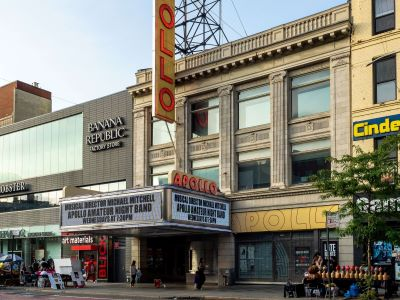
PortableNYCTours, CC BY-SA 4.0, via Wikimedia Commons; Image Size Adjusted
.jpg){kind=link}
Anniston Museum of Natural History
Anniston
Historic venue in the Harlem neighborhood of Manhattan, known for hosting the Apollo Theater's famous amateur night.
-400.jpg)
PortableNYCTours, CC BY-SA 4.0, via Wikimedia Commons; Image Size Adjusted
Birmingham Civil Rights Institute
Birmingham
Cathedral in the Morningside Heights neighborhood of Manhattan is the world's sixth-largest church by area

bryan..., CC BY-SA 2.0, via Wikimedia Commons; Image Size Adjusted
.jpg){kind=link}
U.S. Space and Rocket Center
Huntsville
Museum complex comprises 26 interconnected buildings housing 45 permanent exhibition halls, in addition to a planetarium and a library

Anthony Quintano from Hillsborough, NJ, United States, CC BY 2.0, via Wikimedia Commons; Image Size Adjusted
.jpg){kind=link}
Anchorage Museum
Anchorage
Most visited urban park in the United States, with an estimated 42 million visitors annually as of 2016, and is the most filmed location in the world
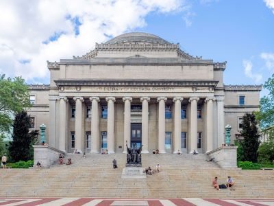
Anthony Quintano from Hillsborough, NJ, United States, CC BY 2.0, via Wikimedia Commons; Image Size Adjusted
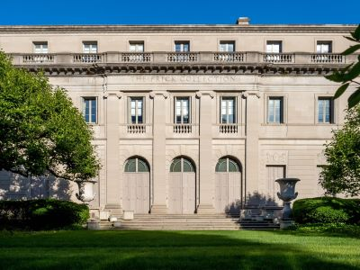
Rhododendrites, CC BY-SA 4.0, via Wikimedia Commons; Image Size Adjusted
.jpg){kind=link}
Bisbee Mining and Historical Museum
Bisbee
Art museum located in the Henry Clay Frick House on the Upper East Side of Manhattan, with a collection of Old Master paintings and European fine and decorative arts.
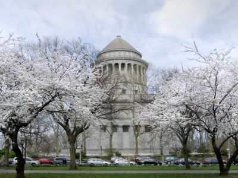
Rhododendrites, CC BY-SA 4.0, via Wikimedia Commons; Image Size Adjusted
Heard Museum
Phoenix
Monument dedicated to General Ulysses S. Grant, the 18th President of the United States.
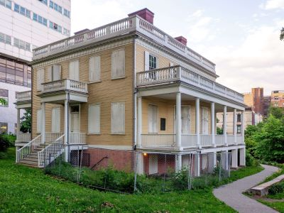
Rhododendrites, CC BY-SA 4.0, via Wikimedia Commons; Image Size Adjusted
Musical Instrument Museum
Phoenix
Monument dedicated to Alexander Hamilton, the first Secretary of the Treasury and founder of the United States' financial system.

Rhododendrites, CC BY-SA 4.0, via Wikimedia Commons; Image Size Adjusted
Sigler Western Museum
Wickenburg
16.3-acre complex of buildings houses nationally and internationally renowned performing arts organizations including the New York Philharmonic, the Metropolitan Opera, and the New York City Ballet
.jpg){kind=link}
Western Spirit: Scottsdale's Museum of the West
Scottsdale
Largest art museum in the United States. Its permanent collection contains over 2 million works, divided among 17 curatorial departments

Jdforrester, CC BY 4.0, via Wikimedia Commons; Image Size Adjusted

Historic Arkansas Museum
Little Rock
Aerial tramway in New York City that spans the East River and connects Roosevelt Island to the Upper East Side of Manhattan

Jean-Christophe BENOIST, CC BY 3.0, via Wikimedia Commons; Image Size Adjusted

Aerospace Museum of California
McClellan Park
Art museum that is home of a continuously expanding collection of Impressionist, Post-Impressionist, early Modern, and contemporary art

Ajay Suresh from New York, NY, USA, CC BY 2.0, via Wikimedia Commons; Image Size Adjusted
.jpg){kind=link}
Agua Caliente Cultural Museum
Palm Springs
Theatrical performances which are presented in the 41 professional theatres, located in the Theater District and the Lincoln Center along Broadway
Ajay Suresh from New York, NY, USA, CC BY 2.0, via Wikimedia Commons; Image Size Adjusted
Aquarium of the Bay
San Francisco
Theatrical performances which are presented in the 41 professional theatres, located in the Theater District and the Lincoln Center along Broadway
-400.jpg)
ajay_suresh, CC BY 2.0, via Wikimedia Commons; Image Size Adjusted
.jpg){kind=link}
California African American Museum
Los Angeles
9.6-acre (39,000 m2) public park in Midtown Manhattan where the eastern half is occupied by the Main Branch of the New York Public Library and the western half contains a lawn, and shaded walkways

Misterweiss at English Wikipedia, Public domain, via Wikimedia Commons; Image Size Adjusted

California Science Center
Los Angeles
Art Deco skyscraper in the Turtle Bay neighborhood on the East Side of Manhattan is the tallest brick building in the world with a steel framework

Hypnotoad78, CC BY-SA 4.0, via Wikimedia Commons; Image Size Adjusted

California State Railroad Museum
Sacramento
Outdoor terrace jutting 80 feet outward south, providing panoramic views of Manhattan and the Hudson River

Cerritos Library
Cerritos
Commuter rail terminal in Midtown Manhattan known for its distinctive architecture and interior design that have earned it several landmark designations
_(51395759113)-400.jpg)
ajay_suresh, CC BY 2.0, via Wikimedia Commons; Image Size Adjusted
_(51395759113).jpg){kind=link}
Columbia Memorial Space Center
Downey
Art museum located in Midtown Manhattan is often identified as one of the largest and most influential museums of modern art in the world
-400.jpg)
Ingfbruno, CC BY-SA 3.0, via Wikimedia Commons; Image Size Adjusted
.jpg){kind=link}
Hiller Aviation Museum
San Carlos
Flagship building in the New York Public Library system and a landmark in Midtown Manhattan
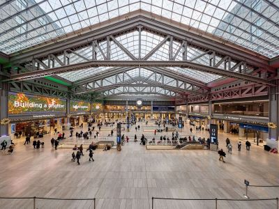
Ingfbruno, CC BY-SA 3.0, via Wikimedia Commons; Image Size Adjusted
Japanese American National Museum
Los Angeles
Historic train station in Midtown Manhattan and a significant transportation hub.

PumpkinSky, CC BY-SA 3.0, via Wikimedia Commons; Image Size Adjusted

LA Plaza de Cultura y Artes
Los Angeles
Art Deco styled entertainment venue within Rockefeller Center known for its large auditorium

Maritime Museum of San Diego
San Diego
Large complex consisting of 19 commercial buildings covering 22 acres (89,000 m2) between 48th Street and 51st Street in Midtown Manhattan

Jean-Christophe BENOIST, CC BY 3.0, via Wikimedia Commons; Image Size Adjusted

Museum of Latin American Art
Long Beach
Catholic cathedral in the Midtown Manhattan is the largest Gothic Revival Catholic cathedral in North America

Saggittarius A, CC BY-SA 4.0, via Wikimedia Commons; Image Size Adjusted

Museum of Sonoma County
Santa Rosa
Observation deck consisting of glass-floored elevators and enclosed glass balconies that protrude from the facade

NBCUniversal, CC BY 3.0, via Wikimedia Commons; Image Size Adjusted
Museum of the African Diaspora
San Francisco
Centerpiece of Rockefeller Center houses the headquarters and New York studios of television network NBC; the Rainbow Room restaurant; and Top of the Rock observation deck

Museum of Us
San Diego
Major commercial intersection, tourist destination, entertainment center, brightly lit by numerous billboards and advertisements, is one of the world's busiest pedestrian areas, and the hub of the Broadway Theater District

Basil D Soufi, CC BY-SA 3.0, via Wikimedia Commons; Image Size Adjusted
.jpg){kind=link}
Sam and Alfreda Maloof Foundation for Arts and Crafts
Alta Loma
Complex that has served as the official headquarters of the United Nations since 1951 and holds the seats of the principal organs of the UN
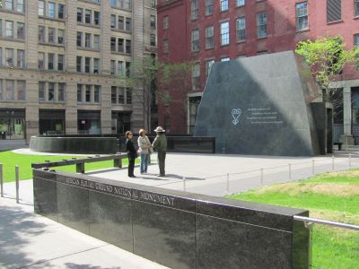
MusikAnimal, CC BY-SA 4.0, via Wikimedia Commons; Image Size Adjusted

San Diego Air and Space Museum
San Diego
Historic site and national monument commemorating the burial ground of enslaved and free African Americans in colonial New York.

MusikAnimal, CC BY-SA 4.0, via Wikimedia Commons; Image Size Adjusted
San Diego History Center
San Diego
Food hall, shopping mall, office building and television production facility located in the Chelsea neighborhood of Manhattan

The Mexican Museum
San Francisco
Neighborhood in Lower Manhattan is the home to the highest concentration of Chinese people in the Western Hemisphere and is one of the oldest Chinese ethnic enclaves
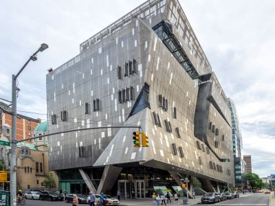
Sam valadi, CC BY 2.0, via Wikimedia Commons; Image Size Adjusted


Sam valadi, CC BY 2.0, via Wikimedia Commons; Image Size Adjusted

PortableNYCTours, CC BY-SA 4.0, via Wikimedia Commons; Image Size Adjusted
.jpg){kind=link}
Denver Botanic Gardens
Denver
Triangular 22-story, 285-foot-tall (86.9 m) steel-framed landmarked building located in the eponymous Flatiron District neighborhood of Manhattan
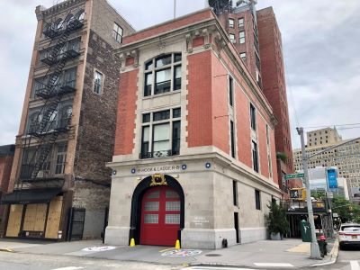
Jim.henderson, CC BY 4.0, via Wikimedia Commons; Image Size Adjusted
_jeh.jpg){kind=link}

History Colorado
Denver
Neighborhood on the west side of Lower Manhattan known as an artists' haven, bohemian capital, cradle of the modern LGBT movement, and the East Coast birthplace the Beat and '60s counterculture movements

Jeff P from Berkeley, CA, USA, CC BY 2.0, via Wikimedia Commons; Image Size Adjusted
.jpg){kind=link}
Littleton Museum
Littleton
Small, fenced-in private park and the surrounding neighborhood that is referred to also as Gramercy, in Manhattan
Matias Garabedian from Montreal, Canada, CC BY-SA 2.0, via Wikimedia Commons; Image Size Adjusted
.jpg){kind=link}
Pinhead Institute
Telluride
1.45-mile-long (2.33 km) elevated linear park, greenway and rail trail created on a former New York Central Railroad spur on the west side of Manhattan

Epicgenius, CC BY-SA 4.0, via Wikimedia Commons; Image Size Adjusted


Jim.henderson, CC BY 4.0, via Wikimedia Commons; Image Size Adjusted
University Corporation for Atmospheric Research
Boulder
Artificial island park in the Hudson River west of Manhattan is supported by 132 pot-shaped structures suspended above the water

Mashantucket Pequot Museum and Research Center
Mashantucket
Neighborhood in Lower Manhattan in New York City, known for its large Italian population

ajay_suresh, CC BY 2.0, via Wikimedia Commons; Image Size Adjusted
.jpg){kind=link}
Mystic Seaport Museum
Mystic
Museum including two historical tenement buildings were home to an estimated 15,000 people, from over 20 nations, between 1863 and 2011
ajay_suresh, CC BY 2.0, via Wikimedia Commons; Image Size Adjusted
Hagley Museum and Library
Wilmington
Museum dedicated to preserving and interpreting the history, culture, and contributions of Chinese Americans through artifacts, multimedia exhibits, and community stories spanning generations.
-400.jpg)
Alan Light, CC BY 2.0, via Wikimedia Commons; Image Size Adjusted
.jpg){kind=link}
Ashley Gibson Barnett Museum of Art at Florida Southern College
Lakeland
21-story, French Renaissance-inspired château style luxury hotel and condominium apartment building in Midtown Manhattan at the southeastern corner of Central Park

Bishop Museum of Science and Nature
Bradenton
Neighborhood in Lower Manhattan known for its location of many artists' lofts and art galleries, and its variety of shops ranging from trendy upscale boutiques to national and international chain store outlets
History Miami Museum
Miami
16-story, 150-foot-tall structure of connected staircases between the buildings of Hudson Yards, located in the 5-acre Hudson Yards Public Square

Jean-Christophe BENOIST, CC BY 3.0, via Wikimedia Commons; Image Size Adjusted

Kennedy Space Center Visitor Complex
Merritt Island
9.75-acre public park in Lower Manhattan is the best known of New York City's public parks and an icon as well as a meeting place and center for cultural activity

Jeff P from Berkeley, CA, USA, CC BY 2.0, via Wikimedia Commons; Image Size Adjusted

Orange County Regional History Center
Orlando
Memorial and museum in New York City commemorating the September 11, 2001 attacks

Patricia and Phillip Frost Art Museum
Miami
25-acre public park located at the southern tip of Manhattan Island facing New York Harbor containing multiple monuments
St. Augustine Lighthouse & Maritime Museum
St. Augustine
Office complex in the Battery Park City neighborhood of Lower Manhattan that includes a shopping mall, food court, and several restaurants.
Tampa Bay History Center
Tampa
Circular sandstone fort built to defend New York City from a British attack and later used as an entertainment venue.

The Baker Museum
Naples
Bronze sculpture depicting a bull, the symbol of aggressive financial optimism and prosperity
The Cici & Hyatt Brown Museum of Art, Science & History
Daytona Beach
Park built on a former elevated railway line in Manhattan.

The Mennello Museum of American Art
Orlando
Island in New York Harbor that was the busiest immigrant inspection station in the United States and is now a national museum of immigration

Booth Western Art Museum
Cartersville
Historic building in the Financial District where the colonial Stamp Act Congress met to draft its message to King George III claiming entitlement to the same rights as the residents of Britain and other historcial events

Jim.henderson, Public domain, via Wikimedia Commons; Image Size Adjusted

David J. Sencer CDC Museum
Atlanta
Museum and restaurant in the Financial District of Lower Manhattan that played a prominent role in history before, during, and after the American Revolution
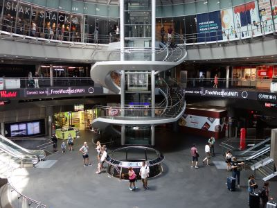
Jim.henderson, Public domain, via Wikimedia Commons; Image Size Adjusted
Georgia Aquarium
Atlanta
Commercial and office complex in the Financial District of Lower Manhattan.
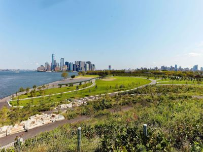
Jim.henderson, Public domain, via Wikimedia Commons; Image Size Adjusted
Georgia's Old Governor's Mansion
Milledgeville
Public park located in New York Harbor, accessible by ferry from Lower Manhattan.

Momos, CC BY-SA 3.0, via Wikimedia Commons; Image Size Adjusted

Morris Museum of Art
Augusta
Located at the center of City Hall Park in the Civic Center area of Lower Manhattan, the building is the oldest city hall in the United States that still houses its original governmental functions

Gh9449, CC BY-SA 4.0, via Wikimedia Commons; Image Size Adjusted

Southern Museum of Civil War and Locomotive History
Kennesaw
Rapid transit system owned by the City of New York and opened on October 27, 1904, is one of the world's oldest public transit systems

Andy C, CC BY-SA 3.0, via Wikimedia Commons; Image Size Adjusted

Tellus Science Museum
Cartersville
The world's largest stock exchange and is the leading US money center for international financial activities

Armando Olivo Martín del Campo, CC BY-SA 4.0, via Wikimedia Commons; Image Size Adjusted

Kona Historical Society
Kealakekua
Main building of the rebuilt World Trade Center complex in Lower Manhattan, is the tallest building in the United States and in the Western Hemisphere
_22_-_Staten_Island_Ferry-400.jpg)
Tdorante10, CC BY-SA 4.0, via Wikimedia Commons; Image Size Adjusted
_22_-_Staten_Island_Ferry.jpg){kind=link}
Lyman Museum and Mission House
Hilo
Busy ferry service operating 24-hours a day connecting Manhattan with Staten Island with view of Statue of Liberty, Ellis Island and New York Skyline

Pearl Harbor Aviation Museum
Honolulu
Colossal neoclassical sculpture on Liberty Island in New York Harbor within New York City
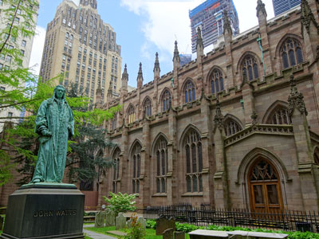
Jean-Christophe BENOIST, CC BY 3.0, via Wikimedia Commons; Image Size Adjusted

Adler Planetarium
Chicago
Historic Episcopal church & cemetery where Alexander Hamilton & other early Americans are buried
DuSable Museum of African American History
Chicago
Designed by the Spanish architect Santiago Calatrava, station consisting of white ribs that interlock high above the ground and interior containing two underground floors

Lizzadro Museum of Lapidary Art
Oak Brook
Southernmost bridge connecting Manhattan Island and Long Island is a major tourist attraction since its opening and an icon of New York City

Northwest Territory Historic Center
Dixon
85-acre park on the Brooklyn side of the East River includes Main Street Parks, historic Fulton Ferry Landing, Piers 1-6, Empire Stores and the Tobacco Warehouse
Peoria Riverfront Museum
Peoria
Major art museum in the Brooklyn Heights neighborhood of Brooklyn, New York City

MusikAnimal, CC BY-SA 4.0, via Wikimedia Commons; Image Size Adjusted
.jpg){kind=link}
Schingoethe Center Museum
Aurora
Peninsular neighborhood and entertainment area in the southwestern section of Brooklyn

Shedd Aquarium
Chicago
Short for Down Under the Manhattan Bridge Overpass, a neighborhood of Brooklyn remade into an upscale residential and commercial community for art galleries, and currently a center for technology startups

Ajay Suresh from New York, NY, USA, CC BY 2.0, via Wikimedia Commons; Image Size Adjusted
.jpg){kind=link}
Conner Prairie
Fishers
Chain of fast food restaurants specializing in hot dogs. The original Nathan's restaurant stands at the corner of Surf and Stillwell Avenues in the Coney Island neighborhood of the Brooklyn
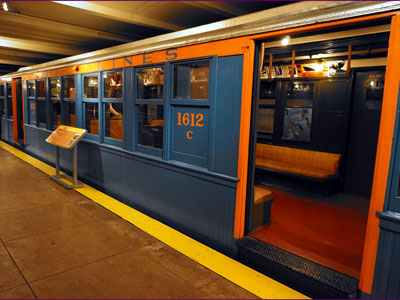
The All-Nite Images from NY, NY, USA, CC BY-SA 2.0, via Wikimedia Commons; Image Size Adjusted
.jpg){kind=link}
Indiana Historical Society
Indianapolis
Museum displaying historical artifacts of the New York City Subway, bus, and commuter rail systems in the greater New York City metropolitan region
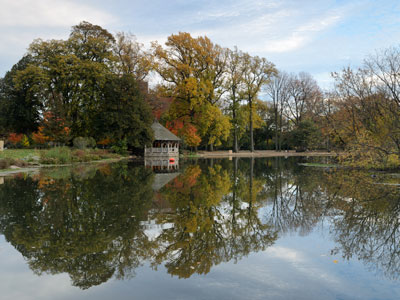
King of Hearts, CC BY-SA 4.0, via Wikimedia Commons; Image Size Adjusted

Dubuque Museum of Art
Dubuque
Urban park in Brooklyn including 90-acre (36 ha) Long Meadow, the Picnic House, Litchfield Villa, Prospect Park Zoo, the Boathouse, and Concert Grove

Postdlf, CC BY-SA 3.0, via Wikimedia Commons; Image Size Adjusted

National Czech & Slovak Museum & Library
Cedar Rapids
One of the largest zoos in the United States by area and is the largest metropolitan zoo in the United States by area

Joyofmuseums, CC BY-SA 4.0, via Wikimedia Commons; Image Size Adjusted

National Mississippi River Museum & Aquarium
Dubuque
Museum in Upper Manhattan, specializing in European medieval art and architecture, with a focus on the Romanesque and Gothic periods

Eden, Janine and Jim, CC BY 2.0, via Wikimedia Commons; Image Size Adjusted

The Putnam Museum & Science Center
Davenport
Public park in the northern part of Queens is the fourth-largest public park in New York City
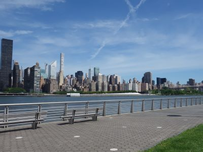
Eden, Janine and Jim, CC BY 2.0, via Wikimedia Commons; Image Size Adjusted
Cosmosphere
Hutchinson
State park on the East River in the Hunters Point neighborhood of Long Island City, Queens.
PortableNYCTours, CC BY-SA 4.0, via Wikimedia Commons; Image Size Adjusted
International Museum of the Horse
Lexington
Historic venue in the Harlem neighborhood of Manhattan, known for hosting the Apollo Theater's famous amateur night.
PortableNYCTours, CC BY-SA 4.0, via Wikimedia Commons; Image Size Adjusted
Kentucky Historical Society
Frankfort
Cathedral in the Morningside Heights neighborhood of Manhattan is the world's sixth-largest church by area
bryan..., CC BY-SA 2.0, via Wikimedia Commons; Image Size Adjusted
The Frazier History Museum
Louisville
Museum complex comprises 26 interconnected buildings housing 45 permanent exhibition halls, in addition to a planetarium and a library
Anthony Quintano from Hillsborough, NJ, United States, CC BY 2.0, via Wikimedia Commons; Image Size Adjusted
Louisiana State Exhibit Museum
Shreveport
Most visited urban park in the United States, with an estimated 42 million visitors annually as of 2016, and is the most filmed location in the world
Anthony Quintano from Hillsborough, NJ, United States, CC BY 2.0, via Wikimedia Commons; Image Size Adjusted
Rhododendrites, CC BY-SA 4.0, via Wikimedia Commons; Image Size Adjusted
Abbe Museum
Bar Harbor
Art museum located in the Henry Clay Frick House on the Upper East Side of Manhattan, with a collection of Old Master paintings and European fine and decorative arts.
Rhododendrites, CC BY-SA 4.0, via Wikimedia Commons; Image Size Adjusted
Annmarie Sculpture Garden and Arts Center
Solomons
Monument dedicated to General Ulysses S. Grant, the 18th President of the United States.
Rhododendrites, CC BY-SA 4.0, via Wikimedia Commons; Image Size Adjusted
B&O Railroad Museum
Baltimore
Monument dedicated to Alexander Hamilton, the first Secretary of the Treasury and founder of the United States' financial system.
Rhododendrites, CC BY-SA 4.0, via Wikimedia Commons; Image Size Adjusted
College Park Aviation Museum
College Park
16.3-acre complex of buildings houses nationally and internationally renowned performing arts organizations including the New York Philharmonic, the Metropolitan Opera, and the New York City Ballet
Dr. Samuel D. Harris National Museum of Dentistry
Baltimore
Largest art museum in the United States. Its permanent collection contains over 2 million works, divided among 17 curatorial departments
Jdforrester, CC BY 4.0, via Wikimedia Commons; Image Size Adjusted
Museum of Historic Annapolis
Annapolis
Aerial tramway in New York City that spans the East River and connects Roosevelt Island to the Upper East Side of Manhattan
Jean-Christophe BENOIST, CC BY 3.0, via Wikimedia Commons; Image Size Adjusted
Reginald F. Lewis Museum
Baltimore
Art museum that is home of a continuously expanding collection of Impressionist, Post-Impressionist, early Modern, and contemporary art
Ajay Suresh from New York, NY, USA, CC BY 2.0, via Wikimedia Commons; Image Size Adjusted
Lowell National Historical Park
Lowell
Theatrical performances which are presented in the 41 professional theatres, located in the Theater District and the Lincoln Center along Broadway
Ajay Suresh from New York, NY, USA, CC BY 2.0, via Wikimedia Commons; Image Size Adjusted
Plimoth Patuxet Museums
Plymouth
Theatrical performances which are presented in the 41 professional theatres, located in the Theater District and the Lincoln Center along Broadway
ajay_suresh, CC BY 2.0, via Wikimedia Commons; Image Size Adjusted
Springfield Museums
Springfield
9.6-acre (39,000 m2) public park in Midtown Manhattan where the eastern half is occupied by the Main Branch of the New York Public Library and the western half contains a lawn, and shaded walkways
Misterweiss at English Wikipedia, Public domain, via Wikimedia Commons; Image Size Adjusted
USS Constitution Museum
Boston
Art Deco skyscraper in the Turtle Bay neighborhood on the East Side of Manhattan is the tallest brick building in the world with a steel framework
Hypnotoad78, CC BY-SA 4.0, via Wikimedia Commons; Image Size Adjusted
Air Zoo Aerospace & Science Center
Portage
Outdoor terrace jutting 80 feet outward south, providing panoramic views of Manhattan and the Hudson River
Arab American National Museum
Dearborn
Commuter rail terminal in Midtown Manhattan known for its distinctive architecture and interior design that have earned it several landmark designations
ajay_suresh, CC BY 2.0, via Wikimedia Commons; Image Size Adjusted
Michigan Flight Museum
Belleville
Art museum located in Midtown Manhattan is often identified as one of the largest and most influential museums of modern art in the world
Ingfbruno, CC BY-SA 3.0, via Wikimedia Commons; Image Size Adjusted
Michigan Science Center
Detroit
Flagship building in the New York Public Library system and a landmark in Midtown Manhattan
Ingfbruno, CC BY-SA 3.0, via Wikimedia Commons; Image Size Adjusted
MSU Museum
East Lansing
Historic train station in Midtown Manhattan and a significant transportation hub.
PumpkinSky, CC BY-SA 3.0, via Wikimedia Commons; Image Size Adjusted
The Dennos
Traverse City
Art Deco styled entertainment venue within Rockefeller Center known for its large auditorium
Bell Museum
Saint Paul
Large complex consisting of 19 commercial buildings covering 22 acres (89,000 m2) between 48th Street and 51st Street in Midtown Manhattan
Jean-Christophe BENOIST, CC BY 3.0, via Wikimedia Commons; Image Size Adjusted
American Jazz Museum
Kansas City
Catholic cathedral in the Midtown Manhattan is the largest Gothic Revival Catholic cathedral in North America
Saggittarius A, CC BY-SA 4.0, via Wikimedia Commons; Image Size Adjusted
Saint Louis Science Center
St. Louis
Observation deck consisting of glass-floored elevators and enclosed glass balconies that protrude from the facade
NBCUniversal, CC BY 3.0, via Wikimedia Commons; Image Size Adjusted
Union Station Kansas City
Kansas City
Centerpiece of Rockefeller Center houses the headquarters and New York studios of television network NBC; the Rainbow Room restaurant; and Top of the Rock observation deck
Montana Heritage Center
Helena
Major commercial intersection, tourist destination, entertainment center, brightly lit by numerous billboards and advertisements, is one of the world's busiest pedestrian areas, and the hub of the Broadway Theater District
Basil D Soufi, CC BY-SA 3.0, via Wikimedia Commons; Image Size Adjusted
Museum of the Rockies
Bozeman
Complex that has served as the official headquarters of the United Nations since 1951 and holds the seats of the principal organs of the UN
MusikAnimal, CC BY-SA 4.0, via Wikimedia Commons; Image Size Adjusted
Durham Museum
Omaha
Historic site and national monument commemorating the burial ground of enslaved and free African Americans in colonial New York.
MusikAnimal, CC BY-SA 4.0, via Wikimedia Commons; Image Size Adjusted
Strategic Air Command & Aerospace Museum
Ashland
Food hall, shopping mall, office building and television production facility located in the Chelsea neighborhood of Manhattan
University of Nebraska State Museum
Lincoln
Neighborhood in Lower Manhattan is the home to the highest concentration of Chinese people in the Western Hemisphere and is one of the oldest Chinese ethnic enclaves
Sam valadi, CC BY 2.0, via Wikimedia Commons; Image Size Adjusted
Sam valadi, CC BY 2.0, via Wikimedia Commons; Image Size Adjusted
PortableNYCTours, CC BY-SA 4.0, via Wikimedia Commons; Image Size Adjusted
Strawbery Banke
Portsmouth
Triangular 22-story, 285-foot-tall (86.9 m) steel-framed landmarked building located in the eponymous Flatiron District neighborhood of Manhattan
Jim.henderson, CC BY 4.0, via Wikimedia Commons; Image Size Adjusted
Museum of Space History
Alamogordo
Neighborhood on the west side of Lower Manhattan known as an artists' haven, bohemian capital, cradle of the modern LGBT movement, and the East Coast birthplace the Beat and '60s counterculture movements
Jeff P from Berkeley, CA, USA, CC BY 2.0, via Wikimedia Commons; Image Size Adjusted
National Museum of Nuclear Science & History
Albuquerque
Small, fenced-in private park and the surrounding neighborhood that is referred to also as Gramercy, in Manhattan
Matias Garabedian from Montreal, Canada, CC BY-SA 2.0, via Wikimedia Commons; Image Size Adjusted
New Mexico Museum of Natural History and Science
Albuquerque
1.45-mile-long (2.33 km) elevated linear park, greenway and rail trail created on a former New York Central Railroad spur on the west side of Manhattan
Epicgenius, CC BY-SA 4.0, via Wikimedia Commons; Image Size Adjusted
Jim.henderson, CC BY 4.0, via Wikimedia Commons; Image Size Adjusted
Museum of American Finance
New York City
Artificial island park in the Hudson River west of Manhattan is supported by 132 pot-shaped structures suspended above the water
National Jazz Museum in Harlem
New York City
Neighborhood in Lower Manhattan in New York City, known for its large Italian population
ajay_suresh, CC BY 2.0, via Wikimedia Commons; Image Size Adjusted
Rockwell Museum
Corning
Museum including two historical tenement buildings were home to an estimated 15,000 people, from over 20 nations, between 1863 and 2011
ajay_suresh, CC BY 2.0, via Wikimedia Commons; Image Size Adjusted
Snug Harbor Cultural Center and Botanical Garden
Staten Island
Museum dedicated to preserving and interpreting the history, culture, and contributions of Chinese Americans through artifacts, multimedia exhibits, and community stories spanning generations.
Alan Light, CC BY 2.0, via Wikimedia Commons; Image Size Adjusted
Cape Fear Museum of History and Science
Wilmington
21-story, French Renaissance-inspired château style luxury hotel and condominium apartment building in Midtown Manhattan at the southeastern corner of Central Park
Greensboro History Museum
Greensboro
Neighborhood in Lower Manhattan known for its location of many artists' lofts and art galleries, and its variety of shops ranging from trendy upscale boutiques to national and international chain store outlets
North Carolina Museum of History
Raleigh
16-story, 150-foot-tall structure of connected staircases between the buildings of Hudson Yards, located in the 5-acre Hudson Yards Public Square
Jean-Christophe BENOIST, CC BY 3.0, via Wikimedia Commons; Image Size Adjusted
North Carolina Museum of Natural Sciences
Raleigh
9.75-acre public park in Lower Manhattan is the best known of New York City's public parks and an icon as well as a meeting place and center for cultural activity
Jeff P from Berkeley, CA, USA, CC BY 2.0, via Wikimedia Commons; Image Size Adjusted
Sullenberger Aviation Museum
Charlotte
Memorial and museum in New York City commemorating the September 11, 2001 attacks
Cincinnati Museum Center
Cincinnati
25-acre public park located at the southern tip of Manhattan Island facing New York Harbor containing multiple monuments
Cummings Center for the History of Psychology
Akron
Office complex in the Battery Park City neighborhood of Lower Manhattan that includes a shopping mall, food court, and several restaurants.
National Underground Railroad Freedom Center
Cincinnati
Circular sandstone fort built to defend New York City from a British attack and later used as an entertainment venue.
Ohio History Connection
Columbus
Bronze sculpture depicting a bull, the symbol of aggressive financial optimism and prosperity
The Works
Newark
Island in New York Harbor that was the busiest immigrant inspection station in the United States and is now a national museum of immigration
Western Reserve Historical Society
Cleveland
Historic building in the Financial District where the colonial Stamp Act Congress met to draft its message to King George III claiming entitlement to the same rights as the residents of Britain and other historcial events
Jim.henderson, Public domain, via Wikimedia Commons; Image Size Adjusted
Oklahoma History Center
Oklahoma City
Museum and restaurant in the Financial District of Lower Manhattan that played a prominent role in history before, during, and after the American Revolution
Jim.henderson, Public domain, via Wikimedia Commons; Image Size Adjusted
Science Museum Oklahoma
Oklahoma City
Commercial and office complex in the Financial District of Lower Manhattan.
Jim.henderson, Public domain, via Wikimedia Commons; Image Size Adjusted
Stafford Air & Space Museum
Weatherford
Public park located in New York Harbor, accessible by ferry from Lower Manhattan.
Momos, CC BY-SA 3.0, via Wikimedia Commons; Image Size Adjusted
High Desert Museum
Bend
Located at the center of City Hall Park in the Civic Center area of Lower Manhattan, the building is the oldest city hall in the United States that still houses its original governmental functions
Gh9449, CC BY-SA 4.0, via Wikimedia Commons; Image Size Adjusted
North American Aerospace Museum
McMinnville
Rapid transit system owned by the City of New York and opened on October 27, 1904, is one of the world's oldest public transit systems
Andy C, CC BY-SA 3.0, via Wikimedia Commons; Image Size Adjusted
Rice Northwest Museum of Rocks and Minerals
Hillsboro
The world's largest stock exchange and is the leading US money center for international financial activities
Armando Olivo Martín del Campo, CC BY-SA 4.0, via Wikimedia Commons; Image Size Adjusted
African American Museum in Philadelphia
Philadelphia
Main building of the rebuilt World Trade Center complex in Lower Manhattan, is the tallest building in the United States and in the Western Hemisphere
Tdorante10, CC BY-SA 4.0, via Wikimedia Commons; Image Size Adjusted
America's Transportation Experience / AACA Museum
Hershey
Busy ferry service operating 24-hours a day connecting Manhattan with Staten Island with view of Statue of Liberty, Ellis Island and New York Skyline
Army Heritage and Education Center
Carlisle
Colossal neoclassical sculpture on Liberty Island in New York Harbor within New York City
Jean-Christophe BENOIST, CC BY 3.0, via Wikimedia Commons; Image Size Adjusted
Delaware & Lehigh National Heritage Corridor
Easton
Historic Episcopal church & cemetery where Alexander Hamilton & other early Americans are buried
Historic Bethlehem Museums & Sites
Bethlehem
Designed by the Spanish architect Santiago Calatrava, station consisting of white ribs that interlock high above the ground and interior containing two underground floors
Mercer Museum & Fonthill Castle
Doylestown
Southernmost bridge connecting Manhattan Island and Long Island is a major tourist attraction since its opening and an icon of New York City
National Museum of Industrial History
Bethlehem
85-acre park on the Brooklyn side of the East River includes Main Street Parks, historic Fulton Ferry Landing, Piers 1-6, Empire Stores and the Tobacco Warehouse
Railroad Museum of Pennsylvania
Strasburg
Major art museum in the Brooklyn Heights neighborhood of Brooklyn, New York City
MusikAnimal, CC BY-SA 4.0, via Wikimedia Commons; Image Size Adjusted
Senator John Heinz History Center
Pittsburgh
Peninsular neighborhood and entertainment area in the southwestern section of Brooklyn
The National Civil War Museum
Harrisburg
Short for Down Under the Manhattan Bridge Overpass, a neighborhood of Brooklyn remade into an upscale residential and commercial community for art galleries, and currently a center for technology startups
Ajay Suresh from New York, NY, USA, CC BY 2.0, via Wikimedia Commons; Image Size Adjusted
Weitzman National Museum of American Jewish History
Philadelphia
Chain of fast food restaurants specializing in hot dogs. The original Nathan's restaurant stands at the corner of Surf and Stillwell Avenues in the Coney Island neighborhood of the Brooklyn
The All-Nite Images from NY, NY, USA, CC BY-SA 2.0, via Wikimedia Commons; Image Size Adjusted
Museo de Arte de Puerto Rico
San Juan
Museum displaying historical artifacts of the New York City Subway, bus, and commuter rail systems in the greater New York City metropolitan region
King of Hearts, CC BY-SA 4.0, via Wikimedia Commons; Image Size Adjusted
International Tennis Hall of Fame
Newport
Urban park in Brooklyn including 90-acre (36 ha) Long Meadow, the Picnic House, Litchfield Villa, Prospect Park Zoo, the Boathouse, and Concert Grove
Postdlf, CC BY-SA 3.0, via Wikimedia Commons; Image Size Adjusted
Coastal Discovery Museum
Hilton Head Island
One of the largest zoos in the United States by area and is the largest metropolitan zoo in the United States by area
Joyofmuseums, CC BY-SA 4.0, via Wikimedia Commons; Image Size Adjusted
Museum of York County
Rock Hill
Museum in Upper Manhattan, specializing in European medieval art and architecture, with a focus on the Romanesque and Gothic periods
Eden, Janine and Jim, CC BY 2.0, via Wikimedia Commons; Image Size Adjusted
South Carolina State Museum
Columbia
Public park in the northern part of Queens is the fourth-largest public park in New York City
Eden, Janine and Jim, CC BY 2.0, via Wikimedia Commons; Image Size Adjusted
The Children's Museum of the Upstate
Greenville
State park on the East River in the Hunters Point neighborhood of Long Island City, Queens.
PortableNYCTours, CC BY-SA 4.0, via Wikimedia Commons; Image Size Adjusted
Upcountry History Museum
Greenville
Historic venue in the Harlem neighborhood of Manhattan, known for hosting the Apollo Theater's famous amateur night.
PortableNYCTours, CC BY-SA 4.0, via Wikimedia Commons; Image Size Adjusted
National Music Museum
Vermillion
Cathedral in the Morningside Heights neighborhood of Manhattan is the world's sixth-largest church by area
bryan..., CC BY-SA 2.0, via Wikimedia Commons; Image Size Adjusted
South Dakota State Historical Society Museum
Pierre
Museum complex comprises 26 interconnected buildings housing 45 permanent exhibition halls, in addition to a planetarium and a library
Anthony Quintano from Hillsborough, NJ, United States, CC BY 2.0, via Wikimedia Commons; Image Size Adjusted
American Museum of Science and Energy
Oak Ridge
Most visited urban park in the United States, with an estimated 42 million visitors annually as of 2016, and is the most filmed location in the world
Anthony Quintano from Hillsborough, NJ, United States, CC BY 2.0, via Wikimedia Commons; Image Size Adjusted
McClung Museum of Natural History and Culture
Knoxville
Private Ivy League research university in Manhattan.
Rhododendrites, CC BY-SA 4.0, via Wikimedia Commons; Image Size Adjusted
Memphis Rock 'N' Soul Museum
Memphis
Art museum located in the Henry Clay Frick House on the Upper East Side of Manhattan, with a collection of Old Master paintings and European fine and decorative arts.
Rhododendrites, CC BY-SA 4.0, via Wikimedia Commons; Image Size Adjusted
Museum Center at 5ive Points
Cleveland
Monument dedicated to General Ulysses S. Grant, the 18th President of the United States.
Rhododendrites, CC BY-SA 4.0, via Wikimedia Commons; Image Size Adjusted
Museum of Appalachia
Clinton
Monument dedicated to Alexander Hamilton, the first Secretary of the Treasury and founder of the United States' financial system.
Rhododendrites, CC BY-SA 4.0, via Wikimedia Commons; Image Size Adjusted
National Civil Rights Museum
Memphis
16.3-acre complex of buildings houses nationally and internationally renowned performing arts organizations including the New York Philharmonic, the Metropolitan Opera, and the New York City Ballet
Ellen Noël Art Museum
Odessa
Largest art museum in the United States. Its permanent collection contains over 2 million works, divided among 17 curatorial departments
Jdforrester, CC BY 4.0, via Wikimedia Commons; Image Size Adjusted
Fort Worth Museum of Science and History
Fort Worth
Aerial tramway in New York City that spans the East River and connects Roosevelt Island to the Upper East Side of Manhattan
Jean-Christophe BENOIST, CC BY 3.0, via Wikimedia Commons; Image Size Adjusted
Frontiers of Flight Museum
Dallas
Art museum that is home of a continuously expanding collection of Impressionist, Post-Impressionist, early Modern, and contemporary art
Ajay Suresh from New York, NY, USA, CC BY 2.0, via Wikimedia Commons; Image Size Adjusted
International Museum of Art and Science
McAllen
Theatrical performances which are presented in the 41 professional theatres, located in the Theater District and the Lincoln Center along Broadway
Ajay Suresh from New York, NY, USA, CC BY 2.0, via Wikimedia Commons; Image Size Adjusted
National Museum of the Pacific War
Fredericksburg
Theatrical performances which are presented in the 41 professional theatres, located in the Theater District and the Lincoln Center along Broadway
ajay_suresh, CC BY 2.0, via Wikimedia Commons; Image Size Adjusted
Perot Museum of Nature and Science
Dallas
9.6-acre (39,000 m2) public park in Midtown Manhattan where the eastern half is occupied by the Main Branch of the New York Public Library and the western half contains a lawn, and shaded walkways
Misterweiss at English Wikipedia, Public domain, via Wikimedia Commons; Image Size Adjusted
Space Center Houston
Houston
Art Deco skyscraper in the Turtle Bay neighborhood on the East Side of Manhattan is the tallest brick building in the world with a steel framework
Hypnotoad78, CC BY-SA 4.0, via Wikimedia Commons; Image Size Adjusted
The Health Museum
Houston
Outdoor terrace jutting 80 feet outward south, providing panoramic views of Manhattan and the Hudson River
The Witte Museum
San Antonio
Commuter rail terminal in Midtown Manhattan known for its distinctive architecture and interior design that have earned it several landmark designations
ajay_suresh, CC BY 2.0, via Wikimedia Commons; Image Size Adjusted
UT San Antonio Institute of Texan Cultures
San Antonio
Art museum located in Midtown Manhattan is often identified as one of the largest and most influential museums of modern art in the world
Ingfbruno, CC BY-SA 3.0, via Wikimedia Commons; Image Size Adjusted
Sullivan Museum and History Center
Northfield
Flagship building in the New York Public Library system and a landmark in Midtown Manhattan
Ingfbruno, CC BY-SA 3.0, via Wikimedia Commons; Image Size Adjusted
Birthplace of Country Music Museum
Bristol
Historic train station in Midtown Manhattan and a significant transportation hub.
PumpkinSky, CC BY-SA 3.0, via Wikimedia Commons; Image Size Adjusted
George Washington's Mount Vernon Estate
Mount Vernon
Art Deco styled entertainment venue within Rockefeller Center known for its large auditorium
Hermitage Museum & Gardens
Norfolk
Large complex consisting of 19 commercial buildings covering 22 acres (89,000 m2) between 48th Street and 51st Street in Midtown Manhattan
Jean-Christophe BENOIST, CC BY 3.0, via Wikimedia Commons; Image Size Adjusted
National Inventors Hall of Fame Museum
Alexandria
Catholic cathedral in the Midtown Manhattan is the largest Gothic Revival Catholic cathedral in North America
Saggittarius A, CC BY-SA 4.0, via Wikimedia Commons; Image Size Adjusted
Virginia Museum of Natural History
Martinsville
Observation deck consisting of glass-floored elevators and enclosed glass balconies that protrude from the facade
NBCUniversal, CC BY 3.0, via Wikimedia Commons; Image Size Adjusted
Burke Museum of Natural History and Culture
Seattle
Centerpiece of Rockefeller Center houses the headquarters and New York studios of television network NBC; the Rainbow Room restaurant; and Top of the Rock observation deck
Museum of History and Industry
Seattle
Major commercial intersection, tourist destination, entertainment center, brightly lit by numerous billboards and advertisements, is one of the world's busiest pedestrian areas, and the hub of the Broadway Theater District
Basil D Soufi, CC BY-SA 3.0, via Wikimedia Commons; Image Size Adjusted
Northwest Museum of Arts and Culture
Spokane
Complex that has served as the official headquarters of the United Nations since 1951 and holds the seats of the principal organs of the UN
MusikAnimal, CC BY-SA 4.0, via Wikimedia Commons; Image Size Adjusted
The Museum of Flight
Seattle
Historic site and national monument commemorating the burial ground of enslaved and free African Americans in colonial New York.
MusikAnimal, CC BY-SA 4.0, via Wikimedia Commons; Image Size Adjusted
Whatcom Museum
Bellingham
Food hall, shopping mall, office building and television production facility located in the Chelsea neighborhood of Manhattan
Wing Luke Museum of the Asian Pacific American Experience
Seattle
Neighborhood in Lower Manhattan is the home to the highest concentration of Chinese people in the Western Hemisphere and is one of the oldest Chinese ethnic enclaves
Sam valadi, CC BY 2.0, via Wikimedia Commons; Image Size Adjusted
Sam valadi, CC BY 2.0, via Wikimedia Commons; Image Size Adjusted
PortableNYCTours, CC BY-SA 4.0, via Wikimedia Commons; Image Size Adjusted
Wisconsin Veterans Museum
Madison
Triangular 22-story, 285-foot-tall (86.9 m) steel-framed landmarked building located in the eponymous Flatiron District neighborhood of Manhattan
Jim.henderson, CC BY 4.0, via Wikimedia Commons; Image Size Adjusted
Overview
New York, often called New York City to distinguish it from New York State, or NYC for short, is the most populous city in the United States. New York City has been described as the cultural, financial, and media capital of the world, significantly influencing commerce, entertainment, research, technology, education, politics, tourism, art, fashion, and sports, and is the most photographed city in the world. Home to the headquarters of the United Nations, New York is an important center for international diplomacy, and has sometimes been called the capital of the world.
Situated on one of the world's largest natural harbors, New York City is composed of five boroughs, each of which is a county of the State of New York. The five boroughs—Brooklyn, Queens, Manhattan, the Bronx, and Staten Island—were created when local governments were consolidated into a single city in 1898. The city and its metropolitan area constitute the premier gateway for legal immigration to the United States. As many as 800 languages are spoken in New York, making it the most linguistically diverse city in the world. New York is home to more than 3.2 million residents born outside the United States, the largest foreign-born population of any city in the world as of 2016. As of 2019, the New York metropolitan area is estimated to produce a gross metropolitan product (GMP) of $2.0 trillion. If the New York metropolitan area were a sovereign state, it would have the eighth-largest economy in the world.
New York City traces its origins to a trading post founded on the southern tip of Manhattan Island by Dutch colonists in 1624. The settlement was named New Amsterdam (Dutch: Nieuw Amsterdam) in 1626 and was chartered as a city in 1653. The city came under English control in 1664 and was renamed New York after King Charles II of England granted the lands to his brother, the Duke of York. The city was regained by the Dutch in July 1673 and was renamed New Orange for one year and three months; the city has been continuously named New York since November 1674. New York City was the capital of the United States from 1785 until 1790, and has been the largest U.S. city since 1790. The Statue of Liberty a greeted millions of immigrants as they came to the U.S. by ship in the late 19th and early 20th centuries, and is a symbol of the U.S. and its ideals of liberty and peace. In the 21st century, New York has emerged as a global node of creativity, entrepreneurship, and environmental sustainability, and as a symbol of freedom and cultural diversity.
Many districts and landmarks in New York City are well known, including three of the world's ten most visited tourist attractions in 2013. A record 66.6 million tourists visited New York City in 2019. Times Square is the brightly illuminated hub of the Broadway Theater District, one of the world's busiest pedestrian intersections, and a major center of the world's entertainment industry. Many of the city's landmarks, skyscrapers, and parks are known around the world. The Empire State Building has become the global standard of reference to describe the height and length of other structures. Providing continuous 24/7 service and contributing to the nickname The City That Never Sleeps, the New York City Subway is the largest single-operator rapid transit system worldwide, with 472 rail stations. The city has over 120 colleges and universities, including Columbia University, New York University, Rockefeller University, and the City University of New York system, which is the largest urban public university system in the United States. Anchored by Wall Street in the Financial District of Lower Manhattan, New York City has been called both the world's leading financial center and the most financially powerful city in the world, and is home to the world's two largest stock exchanges by total market capitalization, the New York Stock Exchange and NASDAQ.
The location at the mouth of the Hudson River, which feeds into a naturally sheltered harbor and then into the Atlantic Ocean, has helped the city grow in significance as a trading port. Most of New York City is built on the three islands of Long Island, Manhattan, and Staten Island.
New York City is sometimes referred to collectively as the Five Boroughs. There are hundreds of distinct neighborhoods throughout the boroughs, many with a definable history and character.
Manhattan is the geographically smallest and most densely populated borough, is home to Central Park and most of the city's skyscrapers.
Manhattan is the cultural, administrative, and financial center of New York City and contains the headquarters of many major multinational corporations, the United Nations Headquarters, Wall Street, and a number of important universities. The borough of Manhattan is often described as the financial and cultural center of the world.
Manhattan Island is loosely divided into the Lower, Midtown, and Uptown regions. Uptown Manhattan is divided by Central Park into the Upper East Side and theUpper West Side, and above the park is Harlem, bordering the Bronx.
New York City's remaining four boroughs are collectively referred to as the Outer Boroughs.
Brooklyn, on the western tip of Long Island, is the city's most populous borough. Brooklyn is known for its cultural, social, and ethnic diversity, an independent art scene, distinct neighborhoods, and a distinctive architectural heritage. Downtown Brooklyn is the largest central core neighborhood in the Outer Boroughs. The borough has a long beachfront shoreline including Coney Island, established in the 1870s as one of the earliest amusement grounds in the U.S. Marine Park and Prospect Park are the two largest parks in Brooklyn.
Queens, on Long Island north and east of Brooklyn, is geographically the largest borough, the most ethnically diverse county in the United States, and the most ethnically diverse urban area in the world. Historically a collection of small towns and villages founded by the Dutch, the borough has since developed both commercial and residential prominence. Downtown Flushing has become one of the busiest central core neighborhoods in the outer boroughs. Queens is the site of Citi Field, the baseball stadium of the New York Mets, and hosts the annual U.S. Open tennis tournament at Flushing Meadows-Corona Park. Additionally, two of the three busiest airports serving the New York metropolitan area, John F. Kennedy International Airport and LaGuardia Airport, are located in Queens.
The Bronx is New York City's northernmost borough and the only New York City borough that lies mainly on the mainland United States. It is the location of Yankee Stadium, the baseball park of the New York Yankees. It is also home to the Bronx Zoo, the world's largest metropolitan zoo, which spans 265 acres (1.07 km2) and houses more than 6,000 animals. The Bronx is also the birthplace of hip hop music and culture. Pelham Bay Park is the largest park in New York City, at 2,772 acres.
Staten Island is the most suburban in character of the five boroughs. Staten Island is connected to Brooklyn by the Verrazano-Narrows Bridge, and to Manhattan by way of the free Staten Island Ferry, a daily commuter ferry which provides unobstructed views of the Statue of Liberty, Ellis Island, and Lower Manhattan. In central Staten Island, the Staten Island Greenbelt spans approximately 2,500 acres (10 km2), including 28 miles (45 km) of walking trails and one of the last undisturbed forests in the city. Designated in 1984 to protect the island's natural lands, the Greenbelt comprises seven city parks.
New York has architecturally noteworthy buildings in a wide range of styles and from distinct time periods, from the Dutch Colonial Pieter Claesen Wyckoff House in Brooklyn, the oldest section of which dates to 1656, to the modern One World Trade Center, the skyscraper at Ground Zero in Lower Manhattan and the most expensive office tower in the world by construction cost.
Manhattan's skyline, with its many skyscrapers, is universally recognized, and the city has been home to several of the tallest buildings in the world. As of 2019, New York City had 6,455 high-rise buildings, the third most in the world after Hong Kong and Seoul. Of these, as of 2011, 550 completed structures were at least 330 feet (100 m) high, with more than fifty completed skyscrapers taller than 656 feet (200 m). These include the Woolworth Building, an early example of Gothic Revival architecture in skyscraper design, built with massively scaled Gothic detailing; completed in 1913, for 17 years it was the world's tallest building.
The 1916 Zoning Resolution required setbacks in new buildings and restricted towers to a percentage of the lot size, to allow sunlight to reach the streets below. The Art Deco style of the Chrysler Building (1930) and Empire State Building (1931), with their tapered tops and steel spires, reflected the zoning requirements. The buildings have distinctive ornamentation, such as the eagles at the corners of the 61st floor on the Chrysler Building, and are considered some of the finest examples of the Art Deco style. A highly influential example of the international style in the United States is the Seagram Building (1957), distinctive for its façade using visible bronze-toned I-beams to evoke the building's structure.
The character of New York's large residential districts is often defined by the elegant brownstone rowhouses and townhouses and shabby tenements that were built during a period of rapid expansion from 1870 to 1930. In contrast, New York City also has neighborhoods that are less densely populated and feature free-standing dwellings. In neighborhoods such as Riverdale (in the Bronx), Ditmas Park (in Brooklyn), and Douglaston (in Queens), large single-family homes are common in various architectural styles such as Tudor Revival and Victorian.
The city of New York has a complex park system, with various lands operated by the National Park Service, the New York State Office of Parks, Recreation and Historic Preservation, and the New York City Department of Parks and Recreation.
The Statue of Liberty National Monument and Ellis Island Immigration Museum are managed by the National Park Service and are in both the states of New York and New Jersey. They are joined in the harbor by Governors Island National Monument, in New York. Historic sites under federal management on Manhattan Island include Castle Clinton National Monument; Federal Hall National Memorial; Theodore Roosevelt Birthplace National Historic Site; General Grant National Memorial ("Grant's Tomb"); African Burial Ground National Monument; and Hamilton Grange National Memorial. Hundreds of private properties are listed on the National Register of Historic Places or as a National Historic Landmark such as, for example, the Stonewall Inn, part of the Stonewall National Monument in Greenwich Village, as the catalyst of the modern gay rights movement.
New York City has over 28,000 acres (110 km2) of municipal parkland and 14 miles (23 km) of public beaches. The largest municipal park in the city is Pelham Bay Park in the Bronx, with 2,772 acres (1,122 ha).
Central Park, an 843-acre (3.41 km2) park in middle-upper Manhattan, is the most visited urban park in the United States and one of the most filmed locations in the world, with 40 million visitors in 2013. The park has a wide range of attractions; there are several lakes and ponds, two ice-skating rinks, the Central Park Zoo, the Central Park Conservatory Garden, and the 106-acre (0.43 km2) Jackie Onassis Reservoir. Indoor attractions include Belvedere Castle with its nature center, the Swedish Cottage Marionette Theater, and the historic Carousel.
Washington Square Park is a prominent landmark in the Greenwich Village neighborhood of Lower Manhattan. The Washington Square Arch at the northern gateway to the park is an iconic symbol of both New York University and Greenwich Village.
Prospect Park in Brooklyn has a 90-acre (36 ha) meadow, a lake, and extensive woodlands. Within the park is the historic Battle Pass, prominent in the Battle of Long Island.
Flushing Meadows-Corona Park in Queens, with its 897 acres (363 ha) making it the city's fourth largest park, was the setting for the 1939 World's Fair and the 1964 World's Fair and is host to the USTA Billie Jean King National Tennis Center and the annual U.S. Open Tennis Championships tournament.
New York City's most important economic sector lies in its role as the headquarters for the U.S. financial industry, metonymously known as Wall Street. The city's securities industry, enumerating 163,400 jobs in August 2013, continues to form the largest segment of the city's financial sector and an important economic engine, accounting in 2012 for 5.0 percent of the city's private sector jobs, 8.5 percent ($3.8 billion) of its tax revenue, and 22 percent of the city's total wages, including an average salary of $360,700. Many large financial companies are headquartered in New York City, and the city is also home to a burgeoning number of financial startup companies.
Lower Manhattan is home to the New York Stock Exchange, at 11 Wall Street, and the NASDAQ, at 165 Broadway, representing the world's largest and second largest stock exchanges, respectively, when measured both by overall average daily trading volume and by total market capitalization of their listed companies in 2013.
Major tourist destinations in Manhattan include Times Square; Broadway theater productions; the Empire State Building; the Statue of Liberty; Ellis Island; the United Nations Headquarters; the World Trade Center (including the National September 11 Museum and One World Trade Center); museums such as the Metropolitan Museum of Art; green spaces such as Central Park and Washington Square Park; the Stonewall Inn; Rockefeller Center; ethnic enclaves including the Manhattan Chinatown, Koreatown, Curry Hill, Harlem, Spanish Harlem, Little Italy, and Little Australia; luxury shopping along Fifth and Madison Avenues; and events such as the Halloween Parade in Greenwich Village; the Brooklyn Bridge (shared with Brooklyn); the Macy's Thanksgiving Day Parade; the lighting of the Rockefeller Center Christmas Tree; the St. Patrick's Day parade; seasonal activities such as ice skating in Central Park in the wintertime; the Tribeca Film Festival; and free performances in Central Park at Summerstage.
Points of interest in the boroughs outside Manhattan include numerous ethnic enclaves; Flushing Meadows-Corona Park and the Unisphere in Queens; the Bronx Zoo; Coney Island, Brooklyn; and the New York Botanical Garden in the Bronx.
New York City has been described as the media capital of the world. The city is a prominent location for the American entertainment industry, with many films, television series, books, and other media being set there.
New York City is also a center for the advertising, music, newspaper, digital media, and publishing industries and is also the largest media market in North America. Some of the city's media conglomerates and institutions include Time Warner, the Thomson Reuters Corporation, the Associated Press, Bloomberg L.P., the News Corporation, The New York Times Company, NBCUniversal, the Hearst Corporation, AOL, and Viacom. Seven of the world's top eight global advertising agency networks have their headquarters in New York. Two of the top three record labels' headquarters are in New York: Sony Music Entertainment and Warner Music Group. Universal Music Group also has offices in New York.
The television and radio industry developed in New York and is a significant employer in the city's economy. The three major American broadcast networks are all headquartered in New York: ABC, CBS, and NBC. Many cable networks are based in the city as well, including CNN, MSNBC, MTV, Fox News, HBO, Showtime, Bravo, Food Network, AMC, and Comedy Central. News 12 Networks operated News 12 The Bronx and News 12 Brooklyn.
New York City has more than 2,000 arts and cultural organizations and more than 500 art galleries. The city government funds the arts with a larger annual budget than the National Endowment for the Arts. Wealthy business magnates in the 19th century built a network of major cultural institutions, such as Carnegie Hall and the Metropolitan Museum of Art, which have become internationally renowned. The advent of electric lighting led to elaborate theater productions, and in the 1880s, New York City theaters on Broadway and along 42nd Street began featuring a new stage form that became known as the Broadway musical.
Broadway theatre is one of the premier forms of English-language theatre in the world, named after Broadway, the major thoroughfare that crosses Times Square, also sometimes referred to as "The Great White Way". Forty-one venues in Midtown Manhattan's Theatre District, each with at least 500 seats, are classified as Broadway theatres.
Lincoln Center for the Performing Arts, anchoring Lincoln Square on the Upper West Side of Manhattan, is home to numerous influential arts organizations, including the Metropolitan Opera, New York City Opera, New York Philharmonic, and New York City Ballet, as well as the Vivian Beaumont Theater, the Juilliard School, Jazz at Lincoln Center, and Alice Tully Hall. The Lee Strasberg Theatre and Film Institute is in Union Square, and Tisch School of the Arts is based at New York University, while Central Park SummerStage presents free music concerts in Central Park.
New York City's food culture includes an array of international cuisines influenced by the city's immigrant history. Central and Eastern European immigrants, especially Jewish immigrants from those regions, brought bagels, cheesecake, hot dogs, knishes, and delicatessens (or delis) to the city. Italian immigrants brought New York-style pizza and Italian cuisine into the city, while Jewish immigrants and Irish immigrants brought pastrami and corned beef, respectively. Chinese and other Asian restaurants, sandwich joints, trattorias, diners, and coffeehouses are ubiquitous throughout the city. Some 4,000 mobile food vendors licensed by the city, many immigrant-owned, have made Middle Eastern foods such as falafel and kebabs examples of modern New York street food. The city is home to "nearly one thousand of the finest and most diverse haute cuisine restaurants in the world", according to Michelin.
New York City is well known for its street parades, which celebrate a broad array of themes, including holidays, nationalities, human rights, and major league sports team championship victories. The majority of parades are held in Manhattan. The primary orientation of the annual street parades is typically from north to south, marching along major avenues. The annual Macy's Thanksgiving Day Parade is the world's largest parade, beginning alongside Central Park and processing southward to the flagship Macy's Herald Square store; the parade is viewed on telecasts worldwide and draws millions of spectators in person. Other notable parades including the annual St. Patrick's Day Parade in March, the LGBT Pride March in June, the Greenwich Village Halloween Parade in October, and numerous parades commemorating the independence days of many nations.
New York City is home to the headquarters of the National Football League, Major League Baseball, the National Basketball Association, the National Hockey League, and Major League Soccer. The city's two Major League Baseball teams are the New York Mets, who play at Citi Field in Queens, and the New York Yankees, who play at Yankee Stadium in the Bronx. The city is represented in the National Football League by the New York Giants and the New York Jets, although both teams play their home games at MetLife Stadium in nearby East Rutherford, New Jersey.
The metropolitan area is home to two National Hockey League teams. The New York Rangers, the traditional representative of the city itself play at Madison Square Garden in Manhattan. The New York Islanders, traditionally representing Nassau and Suffolk Counties of Long Island, play at Barclays Center in Brooklyn and are planning a return to Nassau County by way of a new arena just outside the border with Queens at Belmont Park.
The city's National Basketball Association teams are the Brooklyn Nets, which played in and were named for New Jersey until 2012, and the New York Knicks, while the New York Liberty is the city's Women's National Basketball Association team. In soccer, New York City is represented by New York City FC of Major League Soccer, who play their home games at Yankee Stadium and the New York Red Bulls, who play their home games at Red Bull Arena in nearby Harrison, New Jersey.
The annual United States Open Tennis Championships is one of the world's four Grand Slam tennis tournaments and is held at the National Tennis Center in Flushing Meadows-Corona Park, Queens. The New York City Marathon, which courses through all five boroughs, is the world's largest running marathon. . Boxing is also a prominent part of the city's sporting scene, with events like the Amateur Boxing Golden Gloves being held at Madison Square Garden each year. The city is also considered the host of the Belmont Stakes, the last, longest and oldest of horse racing's Triple Crown races, held just over the city's border at Belmont Park on the first or second Sunday of June.
The Staten Island Ferry is the world's busiest ferry route, carrying more than 23 million passengers from July 2015 through June 2016 on the 5.2-mile (8.4 km) route between Staten Island and Lower Manhattan and running 24 hours a day. Other ferry systems shuttle commuters between Manhattan and other locales within the city and the metropolitan area.
This article uses material from the Wikipedia article "New York City", which is released under the Creative Commons Attribution-Share-Alike License 3.0
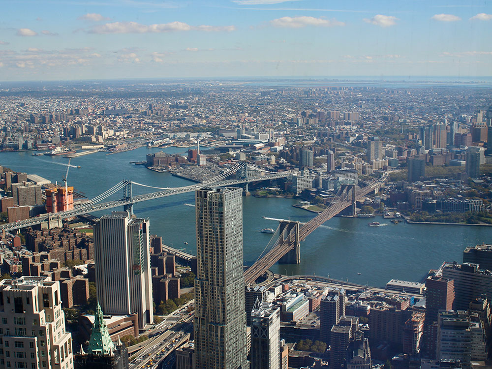
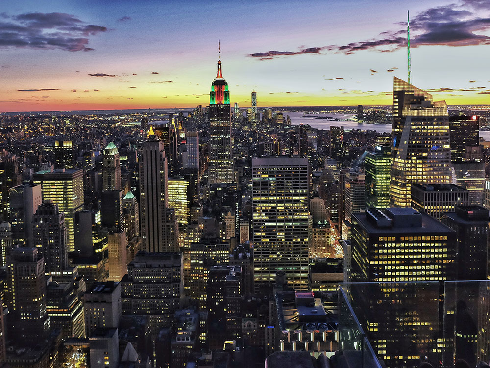